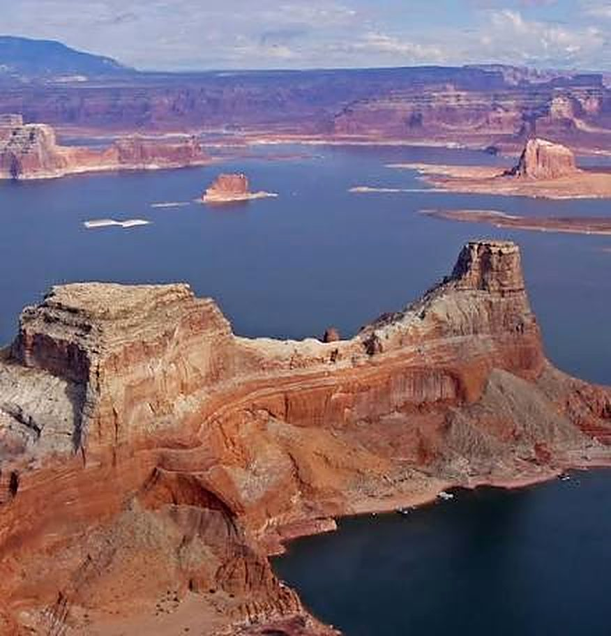

Canyon striper adventure · on the Utah and Arizona border
Guided fishing trips at Lake Powell
Run the canyons, find the bait and watch the stripers explode on the surface.
Book a trip at Lake Powell→
The experience
Striper Canyon
Lake Powell feels less like fishing a lake and more like fishing an enormous canyon system. You run through narrow sandstone canyons, stop where bait is holding and cast for striped bass. When the stripers are schooling, the action can become frantic, with fish chasing bait right to the surface.
Why fish Lake Powell
Massive water, endless canyon structure and the possibility of catching striped bass by the dozens when you find an active school.
Guided by James Henrie, owner of Henrie Outfitters LLC. Call (435) 592-0680 or email henrieoutfitters@gmail.com to plan a trip.
Fish you can catch at Lake Powell
- Striped bass
- Smallmouth bass
- Largemouth bass
- Walleye
- Crappie
- Catfish
- Bluegill
Best fished by boat.
Questions about Lake Powell
Does Henrie Outfitters guide fishing trips at Lake Powell?
Yes. Henrie Outfitters LLC, owned and guided by James Henrie, runs guided fishing trips at Lake Powell and at other lakes across Southern Utah.
What fish can I catch at Lake Powell?
Lake Powell has striped bass, smallmouth bass, largemouth bass, walleye, crappie, catfish and bluegill.
How do I book a guided fishing trip?
Call or text (435) 592-0680, email henrieoutfitters@gmail.com, or use the booking form on the Henrie Outfitters website. Customized trip packages are available.
Other Southern Utah lakes we fish
See all guided fishing trips in Southern Utah.
Visiting Capitol Reef National Park? See fishing near capitol reef.